To record kids' behaviors faster and better
Website of LogKids
（If your network cannot access Firebase, the experience may be not good）
Brief Description
This is a demo video, which was made by my teammates Xinlei Teh
This website was built for kindergarten teachers to record kids’ behavior more conveniently, since one teacher needs to be responsible for many kids, it is hard for them to write things down or memorize all behaviors of different kids.
It was a term project for Introduction to HCI course in spring semester, at KAIST, and finished by me and my three other teammates. I was responsible for part of design of website, all implementations of back end and part of interview task with kindergarten teachers. The website was implemented by JavaScript, HTML, CSS, Firebase and a few open source libraries.
Through five interviews, we conclude that there are three tasks for the teacher to do: Making a quick and brief log for a kid, completing uncompleted logs and reviewing data of the kid for making a summary of kid’s behaviors. Details of the website will be showed as following screen shots.
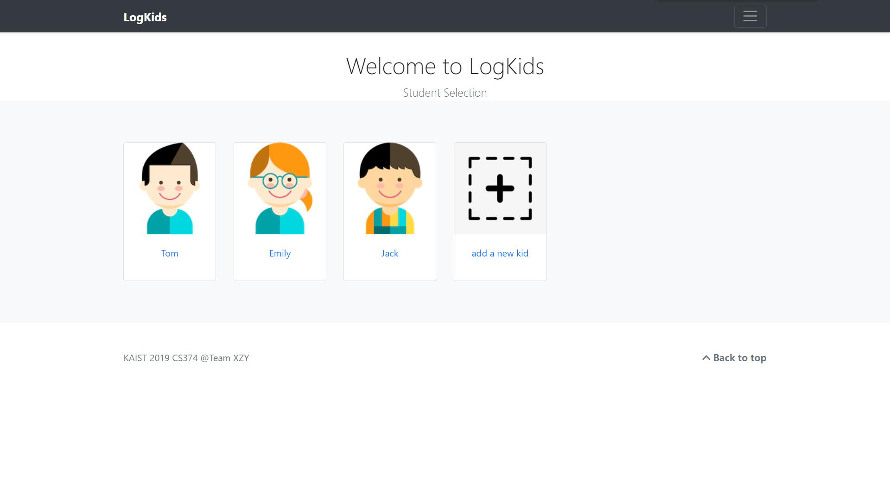Main page of the website, the user (kindergarten teacher) can choose one of existed kids to do operation, or add a new kid.
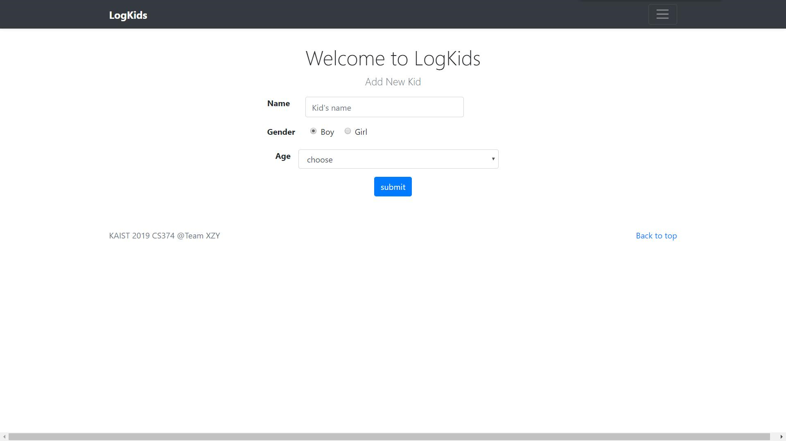
Add a new kid.
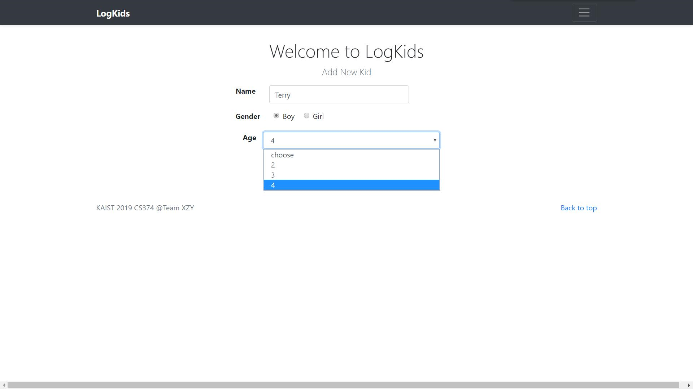
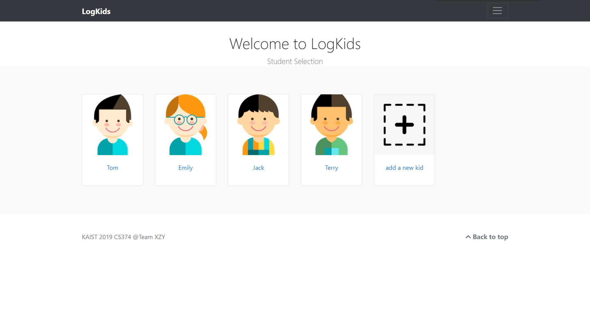
After adding the new kid, it goes back to main page.
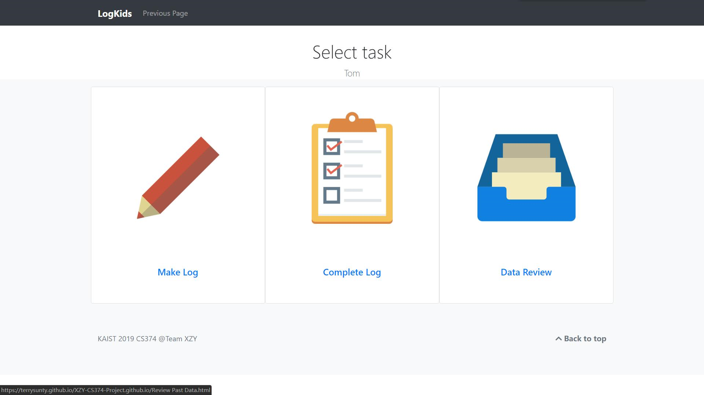
Let’s choose Tom as example here. This page shows task menu.
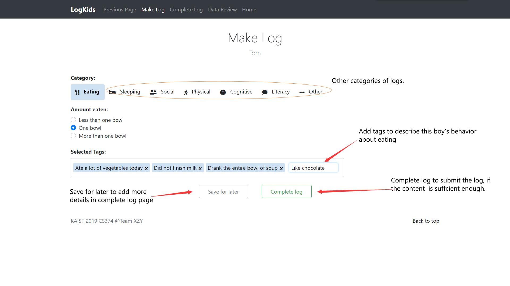
We choose the “task “Make log” at first.
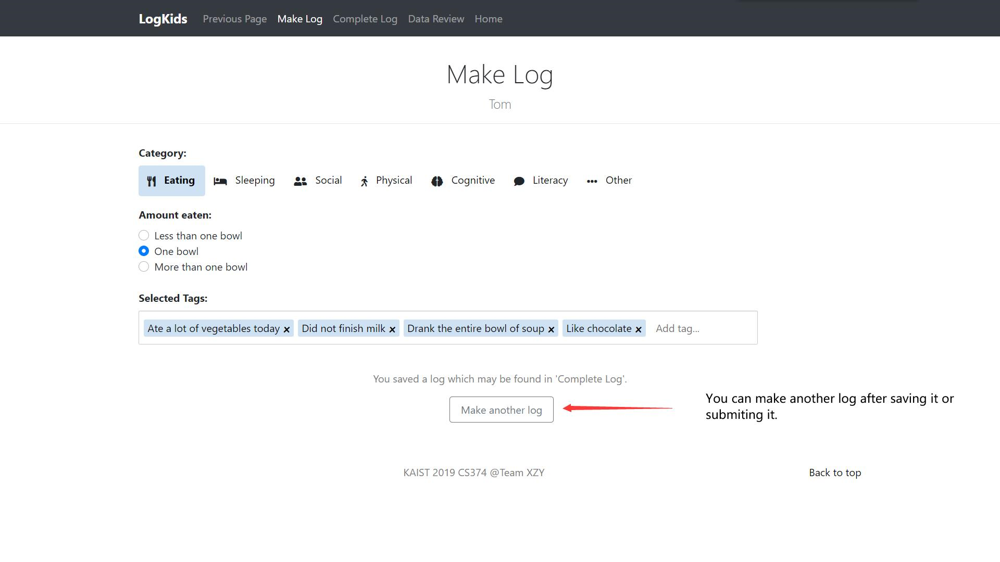
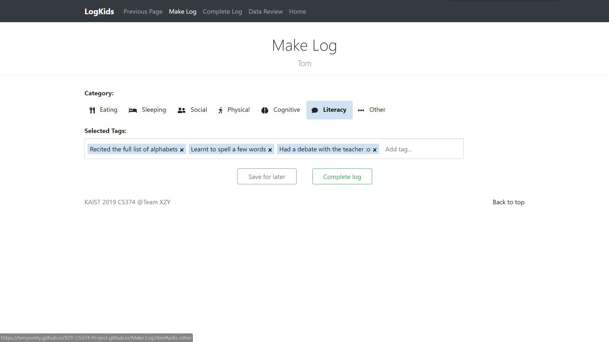
The page of making a log about literacy.
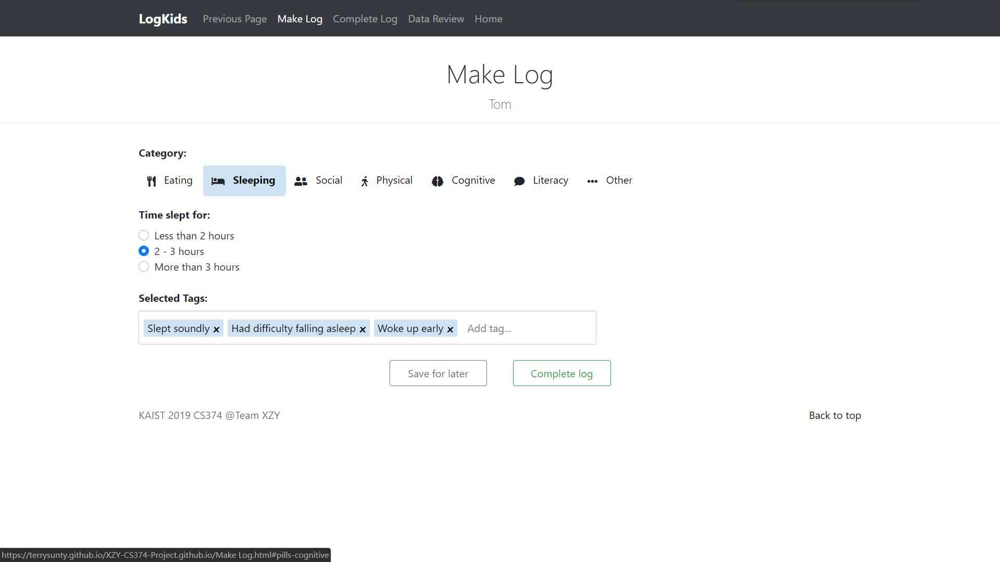
The page of making a log about sleeping.
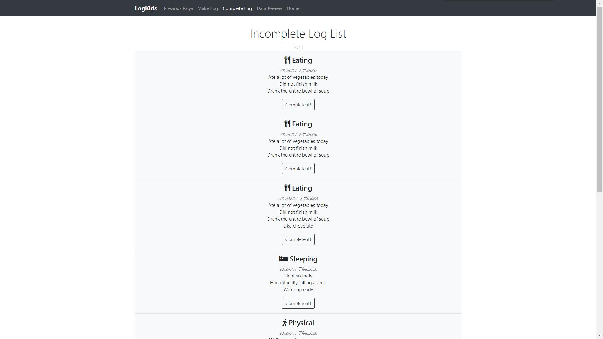
Now, let’s do completing logs part. This page shows logs which are not finished, and logs are sorted by categories and time stamp. Let’s choose third one to complete!
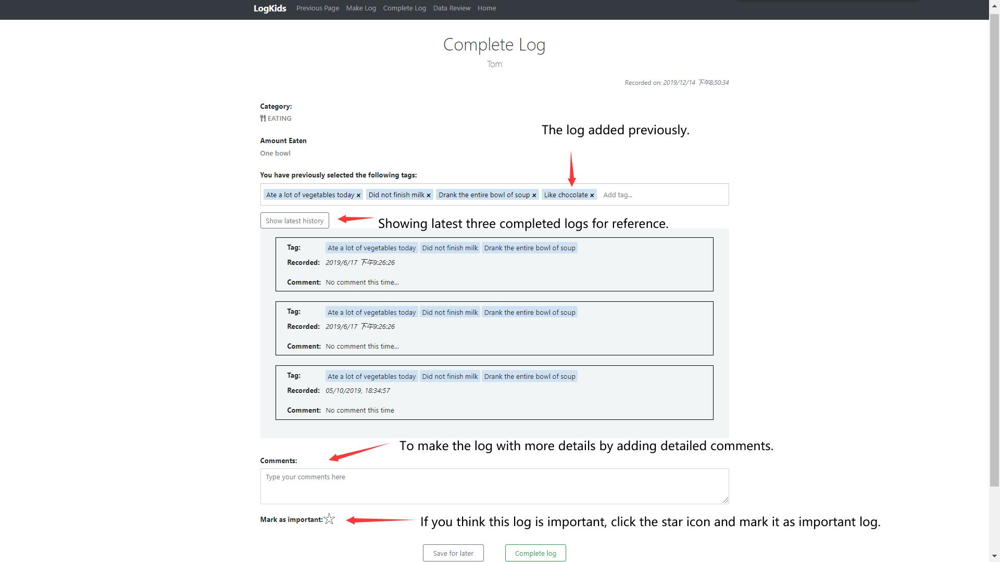
Complete it!
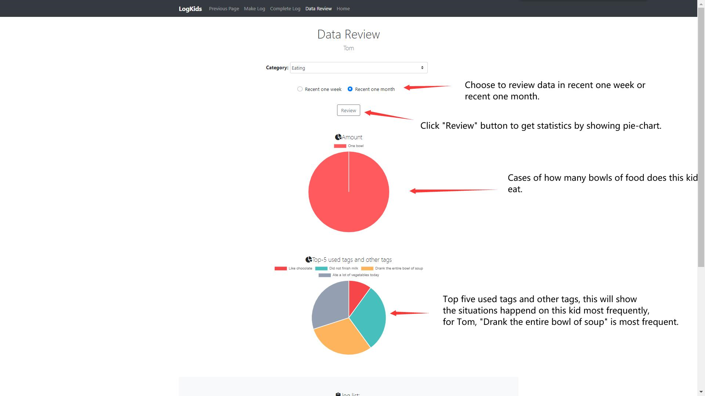
Let’s do data review now, and prepare for summarizing the kid’s behaviors.
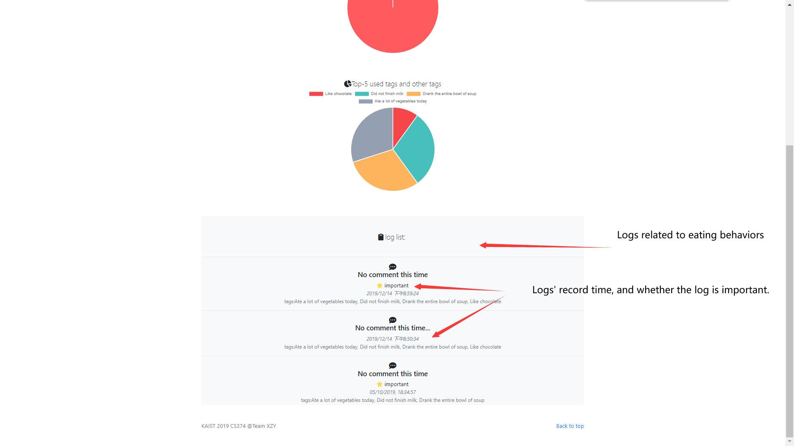